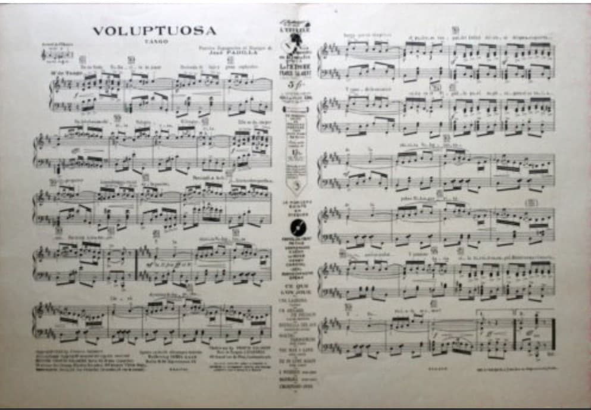
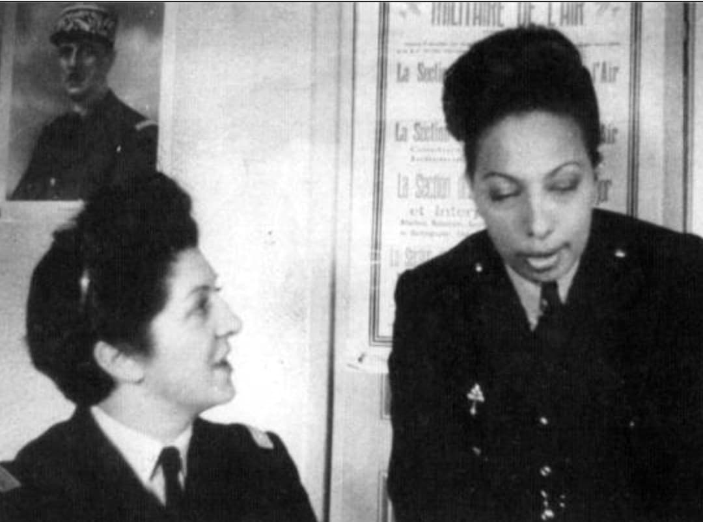
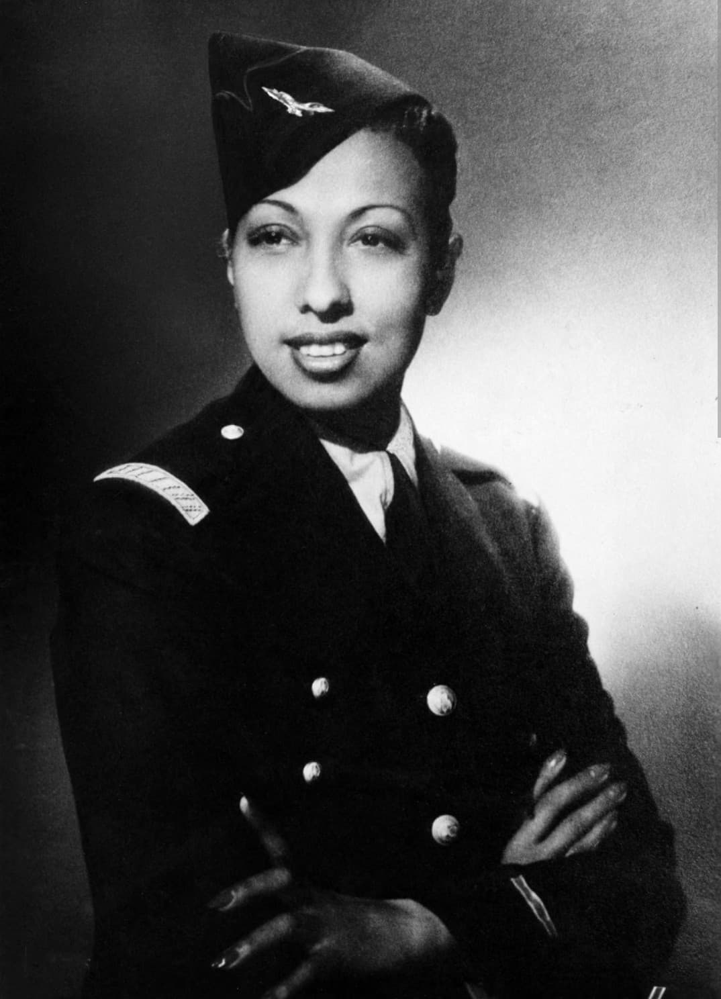
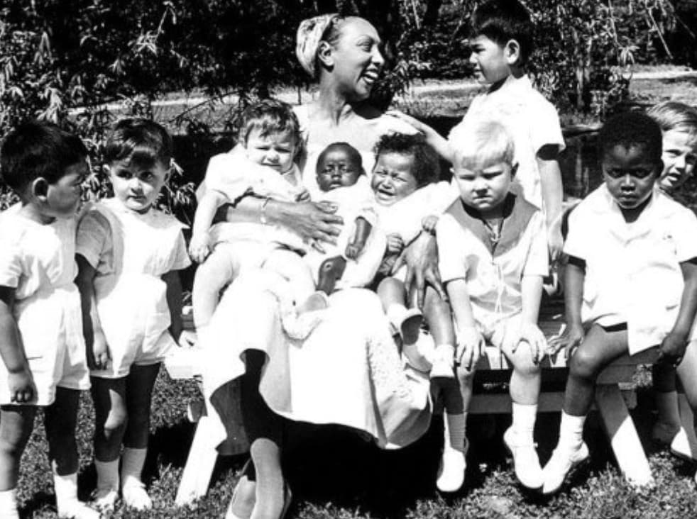

JOSÉPHINE
BAKER
Histoire & Mémoire
Introduction

Joséphine Baker (1906–1975) est l’une des figures les plus surprenantes et admirées de la Seconde Guerre mondiale.
Artiste mondialement connue, elle met sa célébrité au service de la France en devenant agent du renseignement
pour le 2ᵉ Bureau. Son engagement discret mais déterminant fait d’elle une résistante à part entière.
Son action durant la guerre, longtemps méconnue, révèle une femme courageuse, disciplinée et profondément attachée
à la France. Après le conflit, elle poursuit un combat humaniste unique, notamment à travers sa « Tribu Arc‑en‑ciel ».
Espionne pour le 2ᵉ Bureau

Dès 1939, Joséphine Baker rejoint le 2ᵉ Bureau du renseignement militaire français. Grâce à son statut d’artiste
internationale, elle accède à des réceptions diplomatiques où circulent des informations sensibles. Elle écoute,
observe et transmet des renseignements sur les diplomates italiens, japonais ou allemands.
Sa position mondaine lui permet de circuler librement sans éveiller les soupçons. Elle devient un atout précieux
pour les services français.
Messages codés dans les partitions

Pour transmettre des informations, Joséphine Baker utilise ses partitions musicales. Les agents du 2ᵉ Bureau
y inscrivent des notes secrètes à l’encre sympathique. Les feuilles semblent ordinaires, mais contiennent des
renseignements militaires destinés aux Forces françaises libres.
Cette méthode ingénieuse lui permet de voyager avec des documents sensibles sans attirer l’attention.
Missions en Afrique du Nord

En 1941, affaiblie par une maladie, elle se réfugie en Afrique du Nord. Elle y reprend ses spectacles pour soutenir
le moral des soldats français et alliés. En parallèle, elle continue son travail de renseignement et transporte
des documents stratégiques.
Ses tournées servent de couverture à ses déplacements, lui permettant de poursuivre ses missions sans éveiller
les soupçons.
Engagement militaire et décorations

En 1944, Joséphine Baker s’engage officiellement dans les Formations Féminines de l’Air avec le grade de
sous‑lieutenant. Elle participe à des missions de liaison et chante pour les troupes sur différents théâtres
d’opérations.
Après la guerre, elle reçoit la Médaille de la Résistance, la Croix de guerre et plus tard la Légion d’honneur.
En 2021, elle entre au Panthéon, reconnaissance ultime de son rôle historique.
La « Tribu Arc‑en‑ciel » : un projet humaniste

Après la guerre, Joséphine Baker adopte douze enfants de pays, religions et cultures différentes. Elle les appelle
sa « Tribu Arc‑en‑ciel ». Son objectif est de prouver que des enfants de toutes origines peuvent vivre ensemble
dans la paix.
Au château des Milandes, elle crée un environnement éducatif fondé sur la tolérance et la fraternité. Pour elle,
chaque enfant est un symbole vivant contre le racisme. Ce projet humaniste unique au monde marque profondément
sa mémoire.